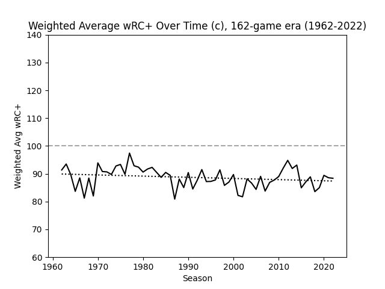
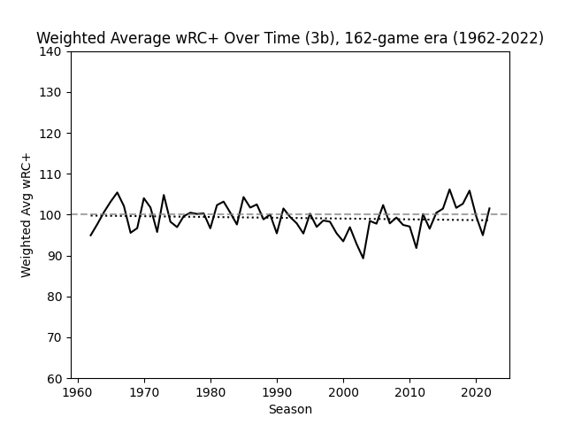
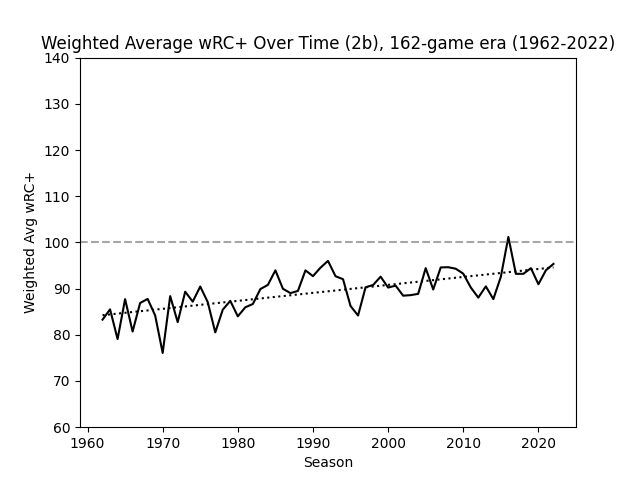
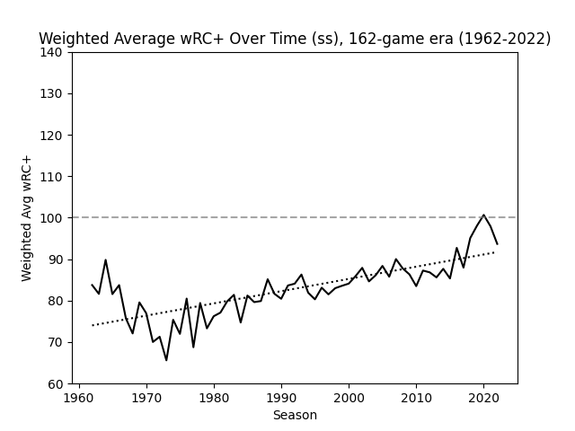
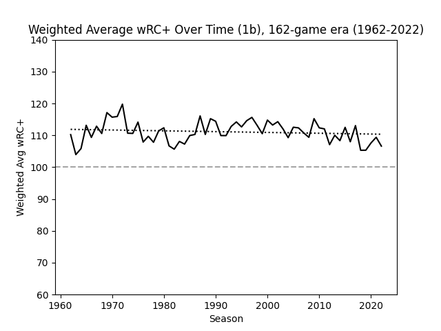
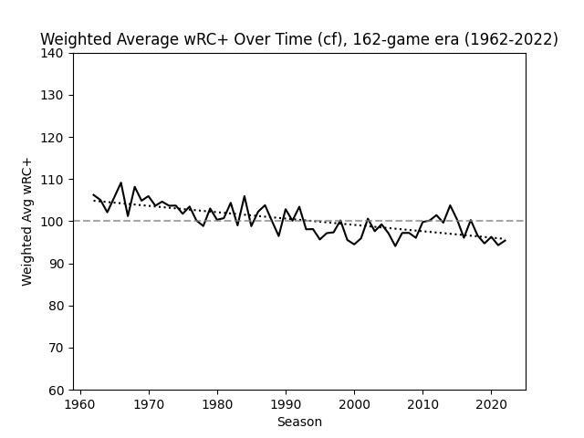
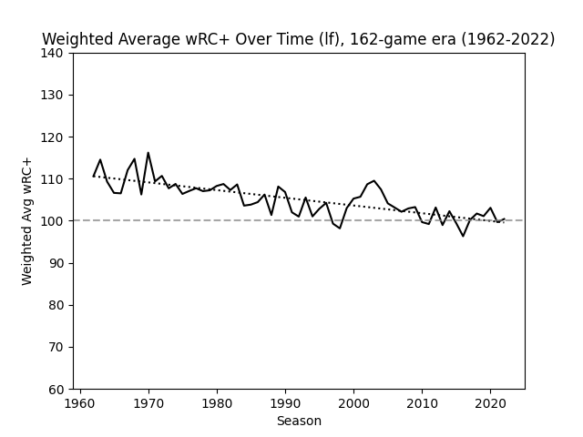
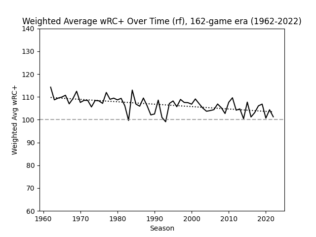
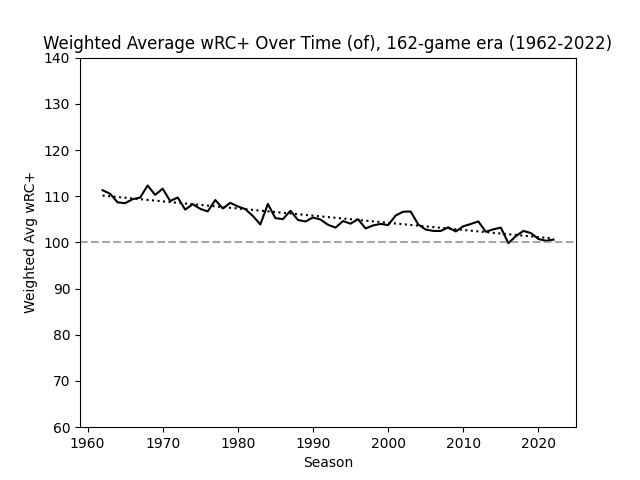

Offensive Performance by Fielding Position
by A. Kline
Posted on 06/23/2023
One of the most important milestones in the history of humanity occurred during the Neolithic Revolution many thousands of years ago. For the first time ever, the amount of food one human could produce exceeded the amount of food one human needed to survive, meaning that not every human needed to farm in order to feed the entire population. As a result, a large proportion of the population was now free to spend their time doing other things, such as creating more advanced tools and weaponry, forming more organized social structures, and writing stuff down. With all this newfound time, people could now become highly skilled in very specific areas.
In the present day, this phenomenon (called specialization by economists) has led to countless innovations in technology, science, medicine, government, and culture. It can also be credited, albeit less directly, for me writing this article and you reading it. In the present day, less than two percent of workers in the United States are employed in agriculture–a far cry from just a hundred years ago–meaning over ninety-eight percent of the American workforce is dedicating their time to areas like those listed above instead of growing food for other humans.
All the downsides of and controversies relating to specialization of labor are well beyond the scope of this article, but there is one in particular I’d like to touch on here. When you spend a given amount of time doing something, that is time you could have been doing something else, but didn’t. Put more pompously, specializing in a given area comes at the detriment of other other areas. As the sport of baseball has grown both in age and popularity, the process of becoming a professional ballplayer has become increasingly tough. Prospective players need more skill, practice, and specialization to stand out from the crowd in today’s game than they used to. However, spending a lot of time honing skill in one very specific area (say, playing a given position on the field) will inevitably result in skill deficits elsewhere.
Perhaps the best example of this is the pitcher, one of the most specialized roles in all of team sports. Pitchers need to spend more time perfecting their craft than fielders of any other position, and it’s not particularly close. They are so specialized that pitching statistics have been kept separate from fielding statistics for as long as baseball statistics have been around. The natural consequence of this is that pitchers, with few exceptions, are famously anemic at the plate, and prior to the introduction of the universal DH in 2022 effectively ending their hitting prospects, they were only getting worse with time. This does not come as a surprise–as stated, specialization in baseball is only becoming more extreme, and more time dedicated to practice pitching means less time dedicated to practice hitting.
But does this logic apply to the rest of the field? For years, the consensus among the baseball community has been that positions like catcher, shortstop, and second base are more grueling and therefore require more skill to play than positions like designated hitter*, first base, and right field–this is the idea behind the defensive spectrum. Since more difficult positions require a greater level of time dedication, the first three positions mentioned have historically seen worse hitting than the league average, and significantly worse hitting than the latter three positions mentioned. Since specialization necessitates that more time is spent perfecting fielding than ever before, we should expect catchers and middle infielders to be getting worse at the plate with time, much like pitchers. But is this the case?
To find out, I looked at MLB batting data by position (excluding pitchers and designated hitters) throughout the entire 162-game era, from the 1962 through 2022 season. The batting stat I decided to zero in on was wRC+, a broad offensive stat that estimates the rate at which a batter contributes runs to their team, normalized such that 100 is always league average. I chose this stat for two reasons: its robustness (OPS+ is generally good but not quite as holistic and well-weighted) as well as its historical availability (I would love to use something like xwOBA, but that is not available prior to 2015). I then scraped the wRC+ data by position in the date range mentioned, and calculated the weighted average wRC+ for all players of that position** in that season, for all seasons from 1962 through 2022. You can find my dataset here.
I then created line graphs measuring the average wRC+ by season for each position. Let’s start with catchers.
As measured by wRC+, catchers have consistently performed about 10% worse at the plate than league average over the past 60 seasons. (Data: Fangraphs)
Catchers being consistently worse at hitting than league average is not surprising. What is surprising is that they are so consistent. By the specialization hypothesis, we should expect catchers to be, if anything, getting worse over time. Let’s now look at a position we have yet to talk about: third base.
Third basemen have been consistently average for as long as MLB teams have been playing 162 games in a season. (Data: Fangraphs)
Prior to analyzing the data for this post, I was not aware how fiercely average third basemen are at the plate. Like I knew they were somewhere in the middle of the pack as measured by the defensive spectrum, but I did not expect them to be this close to league average. Regardless, like catchers, third basemen have shown to be consistent in their offensive performance over time.
Like catchers, we should expect shortstops and second basemen to be consistently below-average hitters given the difficulty of the positions they play, and if the specialization hypothesis is correct, their hitting should be getting worse with time.
Unlike any fielding position examined before, second basemen have been getting better at hitting over time as measured by wRC+. (Data: Fangraphs)
Now that is interesting. Over the past 60 years, second basemen have gone from hitting around 15 percent worse than league average to only about 5 percent worse–and there’s no indication that this trend is slowing down. What about shortstops?
Much like their middle infield counterparts, shortstops have seen consistent improvement at the plate for decades. (Data: Fangraphs)
I have no idea why the batters playing two of the hardest positions on a baseball field are getting better, not worse, at hitting relative to the league average. But I do know that every action has an equal and opposite reaction, so we should now expect an improvement in batting among historically light-hitting positions to be balanced out by regression among historically heavy-hitting ones. Let’s look at said heavy-hitting positions to see if this is the case.
First basemen have essentially a mirror image of catchers–consistently batting about 10% better than league average for the past 60 years. (Data: Fangraphs)
If first basemen and catchers have been equal but opposite in terms of hitting, then perhaps the same will be the case for outfielders in comparison to middle infielders. First, center fielders:
Center fielders have gone from slightly better than league average at the plate to slightly worse than league average. (Data: Fangraphs)
Now left fielders:
In comparison, left fielders have gone from hitting 10% better than league average to hitting pretty much exactly league average. (Data: Fangraphs)
Now right fielders:
Same as above, but a decrease in about 5 percentage points instead of 10. (Data: Fangraphs)
Prior to the making of this post, I was not aware that center fielders could be considered below-average hitters in today’s league. Regardless, the trend among outfielders in general is as expected given the prior data–a consistent decrease in performance at the plate that complements the consistent increase in performance among middle infielders. This can be seen even more clearly when we look at all outfielders aggregated together:
In aggregate, outfielders can no longer really be considered above-average hitters. (Data: Fangraphs)
As measured by wRC+, we can say that although catchers, third basemen, and first basemen have stayed consistent in their hitting ability over the past six decades, both second basemen and shortstops have gotten significantly better at the plate, while all three outfield positions have gotten worse (all relative to league average). It is interesting that the hitting abilities of all positions appear to be converging in today’s league. This of course goes directly counter to my original hypothesis about specialization, and I’ll admit I have no idea why this trend is occurring.
One article about shortstops in particular mentions that the position is much taller on average than it used to be–Fernando Tatis Jr. is 6’3”, Corey Seager and Carlos Correa are 6’4”, and Oneil Cruz is 6’7”, to name a few–and that taller players tend to be stronger and therefore tend to hit better. Of course, the average size of a Major League Baseball player is increasing across all positions, yet not all positions are seeing improvements in hitting. So how much of the improvement in hitting among shortstops can be attributed to those players simply being bigger than they used to be? Further research is needed. Of course, we also do not know how much of this convergence is due to some positions getting better at hitting vs. others getting worse. This whole topic certainly warrants more analysis, and I would definitely like to revisit this subject at some point.
It’s important to note that this is not just a curious observation–it could have serious ramifications for sabermetrics. As it stands, sites like Fangraphs use positional adjustments for, among other things, their WAR calculations. And if these positional adjustments are at all incorrect, then there would be a major vulnerability in stats like WAR, which would have a major impact on player analysis (admittedly due in part to the sheer level of confidence people put in WAR as a stat–but that’s a discussion for another time).
Do these findings have any ramifications in regards to the defensive spectrum as a whole? I’m not sure. I’m learning towards no simply because the defensive spectrum as a concept actually makes intuitive sense, whereas my findings in this post as of now do not. That being said, the results above directly contradict with what we would expect in a world where the defensive spectrum ranks and weighs different positions perfectly.
I am curious to see just how long current trends continue. Will shortstops and second basemen one day outhit outfielders? Will catchers and first basemen continue to hit like nothing is changing? Will third basemen continue to be the benchmark for average at the plate? I guess we’ll just have to wait and see.
* This one should go without saying.
** I initially wanted to calculate the league-wide positional wRC+ for all positions, but for whatever reason scraping this data proved to be impossible, so I decided to reverse-engineer the desired value by calculating a weighted average wRC+ value for all players at a given position, weighted by their number of plate appearances at that position.